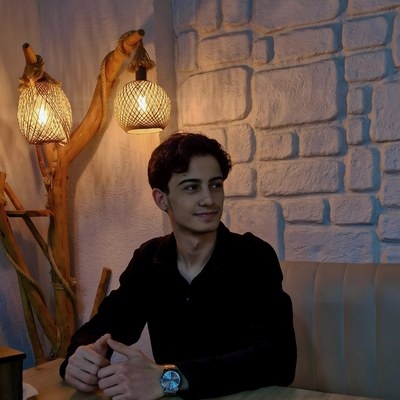

T.C. SAKARYA ÜNİVERSİTESİ
Mühendislik Fakültesi • Bilgisayar Mühendisliği Bölümü
2025–2026 Bahar Dönemi • B Grubu
| Öğrenci Adı | Ali Ayyıldız |
| Öğrenci No | b241210069 |
| E-posta | ali.ayyildiz2@ogr.sakarya.edu.tr |
| Teslim Tarihi | 15 Mayıs 2026 |
| Ders Adı | Web Teknolojileri |
| Sınıf | 1. Sınıf – B Grubu |
⚠️ Not: Aşağıdaki kutulara siteyi tarayıcıda açtıktan sonra
ekran görüntüsü alıp eklemeniz gerekiyor. Her sayfanın gerçek görüntüsünü
images/ss-*.png olarak kaydedin ve src alanlarını güncelleyin.
Sayfa sahibini tanıtan bilgiler, hobiler, etkinlikler, medya öğeleri ve bağlantılar içermektedir. Responsive hero bölümü, kişisel kartlar ve video embed barındırmaktadır.
images/ss-about.png
Semantic HTML5 etiketleri (header, section, article, aside) kullanılarak oluşturulmuş eğitim geçmişi, beceriler, projeler ve dil bölümleri içermektedir.
images/ss-cv.png
Sivas ili hakkında nüfus, gezilecek yerler ve genel bilgiler içermektedir. En az 4 fotoğraftan oluşan tıklanabilir ve otomatik geçişli slider (lightbox desteği) bulunmaktadır.
images/ss-sehrim.png
UNESCO Dünya Mirası olan Divriği Ulu Camii ve Darüşşifası hakkında mimari özellikler, teknik bilgiler, galeri ve konum bilgisi içermektedir.
images/ss-miras.png
API-Football servisi ile Süper Lig puan tablosu, maç sonuçları ve Sivasspor istatistikleri çekilmektedir. Takım arama özelliği içermektedir.
images/ss-api.png
Text, email, tel, date, select, radio, checkbox form elemanları içermektedir. İki ayrı butonda Native JavaScript ve Vue.js ile validasyon yapılmaktadır.
images/ss-iletisim.png
Öğrenci numarası formatında kullanıcı adı ve şifre kontrolü PHP ile yapılmaktadır. Başarılı girişte "Hoşgeldiniz b241210069" mesajı gösterilmektedir.
images/ss-login.png